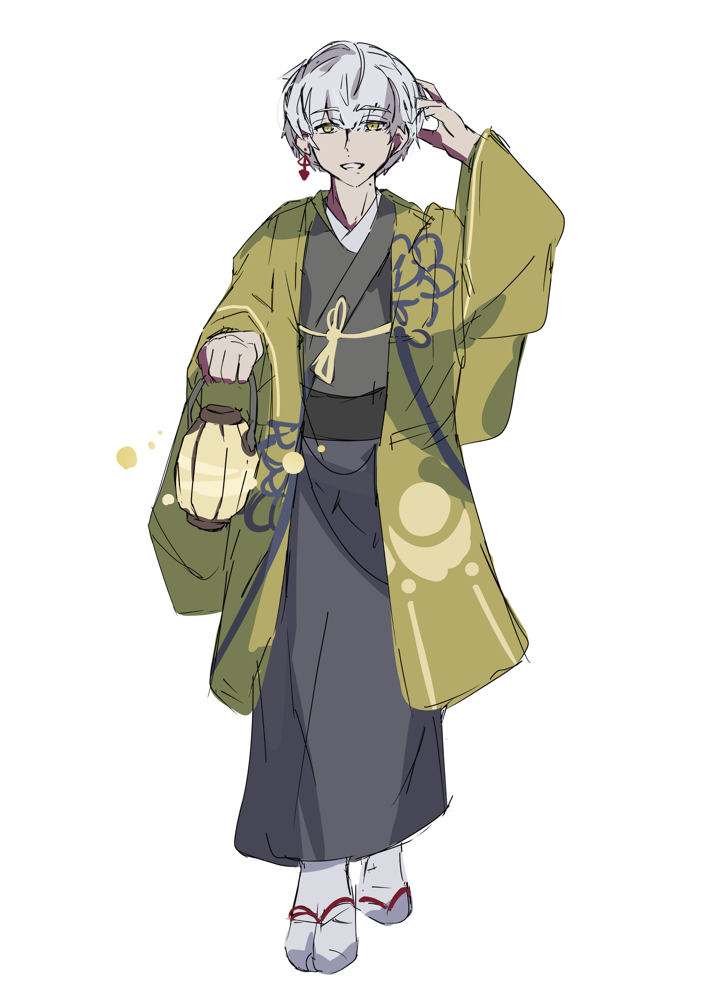

性格
大雑把で人懐っこく、何より騙されやすい。他人が吐いた雑な嘘も正面から信じ込むし、比喩表現もまともに理解しない。故に根拠のない星座占いだってもちろん頭から信じ込んでいる。そのせいで損失を受けることも多くあるが、大雑把なので気にも留めていない。被った被害自体を覚えていないことすらある。
仕事について
黄惑街の郊外にある、和風の温泉宿を経営している。蛍が前オーナーを殺して成り代わった。オーナーが話の流れで冗談混じりに「俺は殺しても死なないよ」と言ったのを真正面から信じて、凶行に及んだらしい。彼は前オーナーを殺してしまったことをまっすぐに後悔している。
過去
暗黒中華街の出身。非常に優しい両親に育てられ、純粋無垢に育った。その結果嘘という概念に一切免疫を持たず、他者からの悪意も全く知覚しない人間が出来上がった。
能力
極端な楽観主義は不幸しか招かない。しかしそんな彼がこの街で搾取される側に落ちずに済んでいるのは、ひとえにありえないほどの豪運を持つ故だ。人に騙されそうになれば、その相手は何故か行方不明になり、負ったはずの借金は借金取りと一緒に蒸発する。